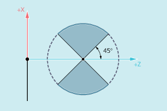
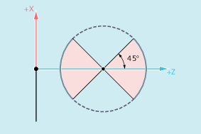
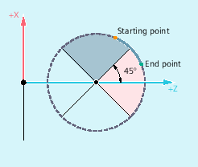

The arc programmed at G335/G336 must be in an area in which the specified thread main axis (I, J or K) has the main axis share on the arc over the entire arc:
|  Permissible areas for the Z axis (pitch programmed with |  Permissible areas for the X axis (pitch programmed with |
A change of the thread main axis as shown in the following figure is not permitted:
Convex thread: Area that is not permissible
G335 and G336 are also possible with active frames. However, you must ensure that the permissible arc areas are maintained in the basic coordinate system (BCS).
The supplementary conditions described for the circular-path programming with G2/G3 apply for the circular-path programming under G335/G336 (see "Circular interpolation").